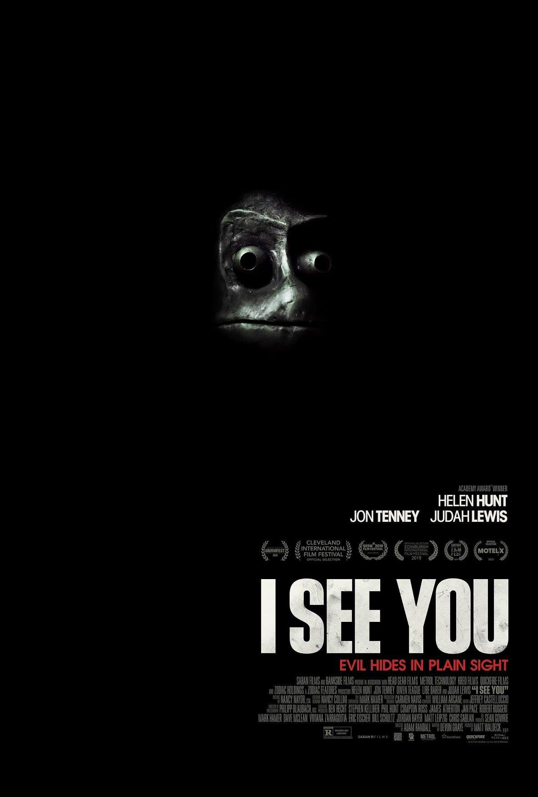
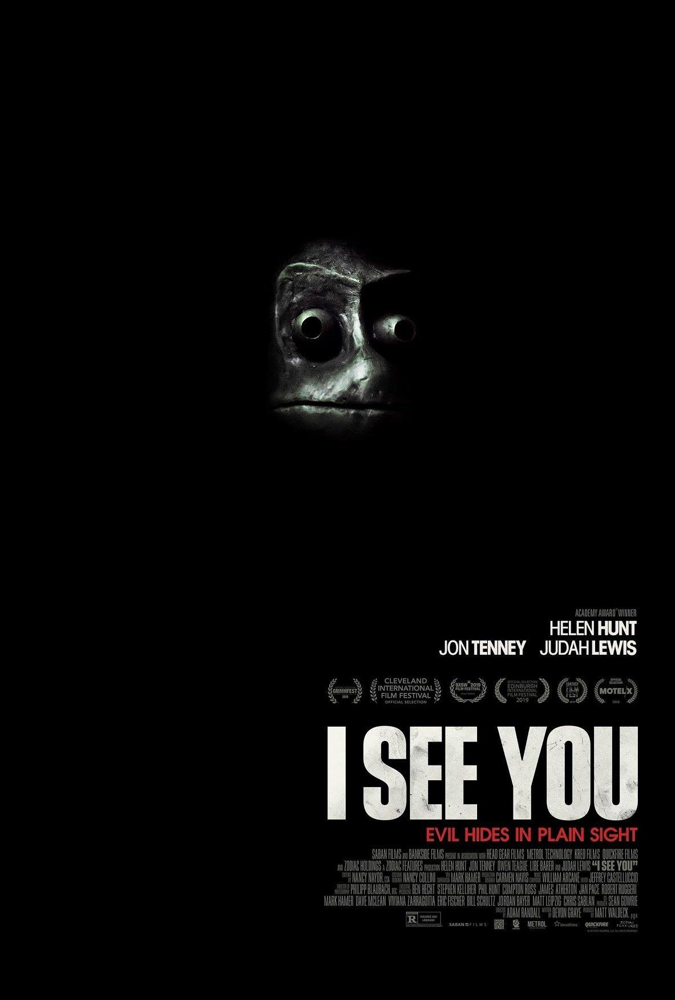

Created By Emilio Artigas and Nikhil Jayakumar

For our guide throughout our hell, we picked Christopher Nolan. This was because of his ability to direct many amazing movies, however throughout his career, he’s directed some complicated movies, as a result, he is a member of the ninth circle.
For our judge, we picked Jeremy Scott, the host and maker of the youtube channel CinemaSins. Scott has reviewed thousands of movies of many different genres, giving both positive and negative reviews. As a result, we believe that he would be a perfect Minos-like judge for our hell.
Sin: Comedic movies are always fun to watch, but when the comedy starts to get cheesy and unfunny, then it is a sin. However, cheesy comedies may still be funny, so we believed it would go perfect as the first circle.
Contrapasso: Every time the sinners see someone, they are forced to recite dull jokes and puns to them.
Sin: The second circle is boring movies. Although boring movies may seem like a questionable sin, the boringness of a movie is very subjective amongst people, so we believed it should stay in the second circle.
Contrapasso: The sinners' daily lives are filled with never-ending chores - leaving them with no time to rest.
Sin: The third sin is movies with too much action because, not only can the action scenes detract from the movie's overall experience, but oftentimes leaves little room for any significant plot developments.
Contrapasso: The sinners have repeated insomnia throughout your everyday life.


Sin: The sin that holds the fourth circle would be bad CGI, editing, and/or film quality. These are movies that are ruined by the bad editing or special effects. Though these movies can still be enjoyed by some, therefore, we chose to put it in the fourth circle
Contrapasso: The sinners have non-repairable (through the means of glasses, contacts, or surgery), terrible eyesight for the rest of their life.
Sin: Filler movie series, while they can be enjoyed by plenty of fans, for a general audience, a movie that holds no substance is the definition of a poorly made movie.
Contrapasso: The sinners have to write a paper every day, but in the end, you’re forced to shred it and start fresh the next day.
Sin: Bad acting would be the sin for the sixth circle. The acting of the cast can greatly affect the movie's experience, and so we believed it would go perfectly in the sixth circle.
Contrapasso: The sinners live their everyday life sounding rehearsed/robotic.
Sin: The seventh circle would contain movies that are unnecessarily long. These movies can often have scenes that are of little importance that can be a great detriment to the movie's overall experience, so it would be a good sin for the seventh circle.
Contrapasso: Living life in slow-motion, but being able to think at a normal pace.

Sin: Used as a means to promote a sequel to a following movie, directors are often seen leaving dramatic cliffhangers at the end of their movies. If you’re anything like us, you’d likely agree that leaving cliffhangers is one of the worst things that can be done to the audience; creating a sequel to a larger-scale movie can take close to a year to release.
Contrapasso: The sinners are falling constantly into a void without knowing when they will hit the ground


Sin: The final sin of movie hell would be movies with overly complex plots. Movies with these plots are nearly impossible to understand; these types of movies can prove to be a terrible experience for many viewers.
Contrapasso: Will be told that once they solve the maze they will reach heaven, but it is an endless maze.
 

For our mythological creature, we think it would be appropriate to have Chris Hemsworth play the role. Our mythological creature requires someone who had deceived people in their past. While this is a very broad criteria to have, when first starting out, Chris Hemsworth allegedly lied about his height in order to gain an acting role. The creature will be found in the ninth circle where sinners are forced to traverse a never-ending maze. The purpose of the creature is to pose as a guide and to deceive the sinners into believing that they are close to reaching the end of the maze, but unbenounced to the sinners, the maze has no end.